Workflow definitions can be created and modified by the business users. Click the Content List tab in the Process Director navigation bar to view the Content List. You must have Modify permission in the folder you are viewing to be able to create a new Workflow definition. Use the Create New menu item and select Workflow Definition from the list.
Workflow definitions can be stored anywhere in the Content List, under any folder structure.
To configure the Workflow definition settings, click on the Settings icon in when viewing the Workflow definition. This will display a dialog that allows the Workflow information to be set.
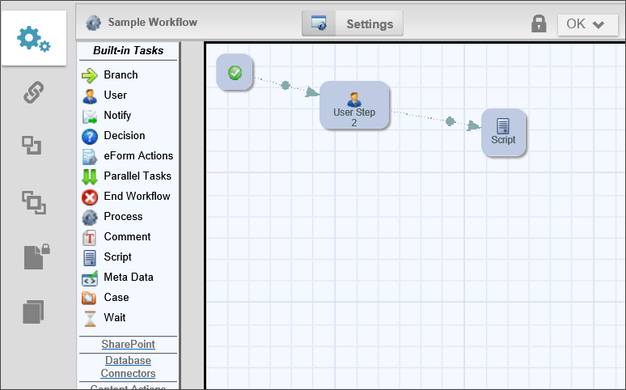
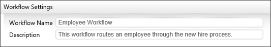
The Workflow definition name and description are important because this is what a user will see when selecting a Workflow to run. The description should describe why and when this Workflow definition should be run.
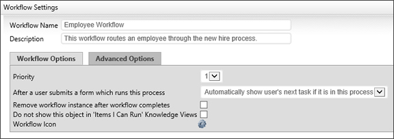
The Workflow priority is used to show participants the importance. The higher priority items are displayed first in a user’s Task List. The Workflow's Priority column can be resorted in the user's Task List.
In some cases, a user may be assigned to two or more activities in a row. The default behavior for Process Director is to immediately display the Form to the user to perform the second task once the first task is completed. This may be confusing, as the user generally expects the Form to close when a task is completed. This property enables you to change the default behavior so that, if a user is assigned to two activities in a row, the Form won't immediately reload to complete the second task. To perform the second task, the user will have to manually re-open the form from the Task List.
When a Workflow is started it is stored under the Workflow definition in the Content List. Completed Workflows will remain there until deleted or moved. If a completed Workflow is not needed for reporting or auditing, you can have them removed automatically when they complete. To automatically delete completed Workflows set the Remove inactive Workflow after it completes flag.
To delete a Workflow instance manually, click on the Workflow definition in the Content List. From there, two options should appear under the Workflow in the Content List: Active Workflows and Completed Workflows. Click on Completed Workflows, select the Workflow you want to delete, and click on the “Delete” action.
Checking this option prevents users from accessing the Workflow from the Items I Can Run Knowledge Views.
A custom icon can also be configured for this Workflow definition. This icon will be displayed for all running Workflows for this definition (e.g. Task List, Content List, Knowledge View, etc.). To change the icon used for this Workflow definition, click on the icon.
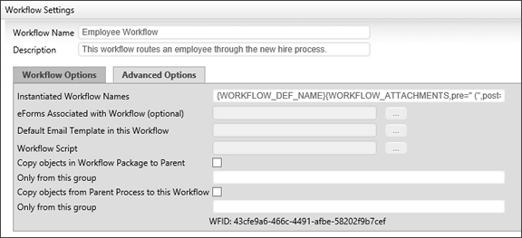
This field contains an optional name that should be used when a Workflow is started (i.e. instantiated). The default name of a running Workflow is the same name as the Workflow definition. This name can contain system variables using the {sysvar} tag. This allows the running Workflow names to contain more meaningful information (e.g. PR Review – started by {CURR_USER}). The running Workflow name is re-evaluated after each Workflow step completes allowing variable data (e.g. Forms field values) to be used to construct the name. Refer to the section named System Variables in this document for more information.
When using an instantiated Workflow name, a user won't be able to override the name when starting a Workflow against an object.
You can optionally link a Workflow to a specific Form definition in the Content List. When this is configured you can choose a form field from a dropdown list of all fields in that form instead of choosing a form then a form field.
To do this, click on Settings, then on the Advanced Options tab in the window that appears. User the Pick List [. . .] button to select the Form you want associated with the Workflow.
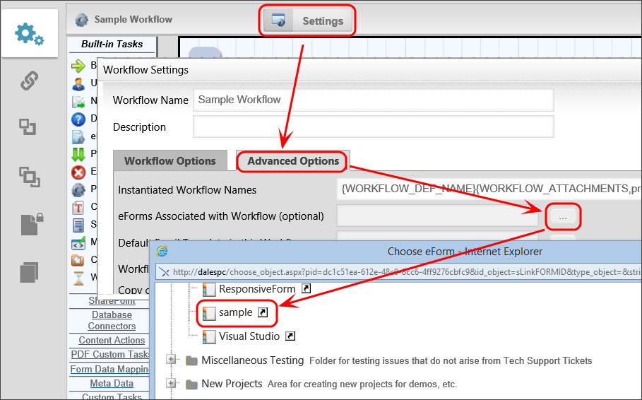
This is an optional default email template to use when sending email notifications to users in a step. If an email template is not specified in a step, this default email template will be used. If no default email template is assigned, the system default email template will be used that was shipped with Process Director. For more information on email templates refer to the section named Using Email Templates in this document. Email Templates are stored in the Content List as a Form uploaded as an Email Template Form.
To set an email template, click on “Settings” then go to the Advanced Options tab in the Window that appears. Use the Pick List [. . .] button, then select the email template you want to use.
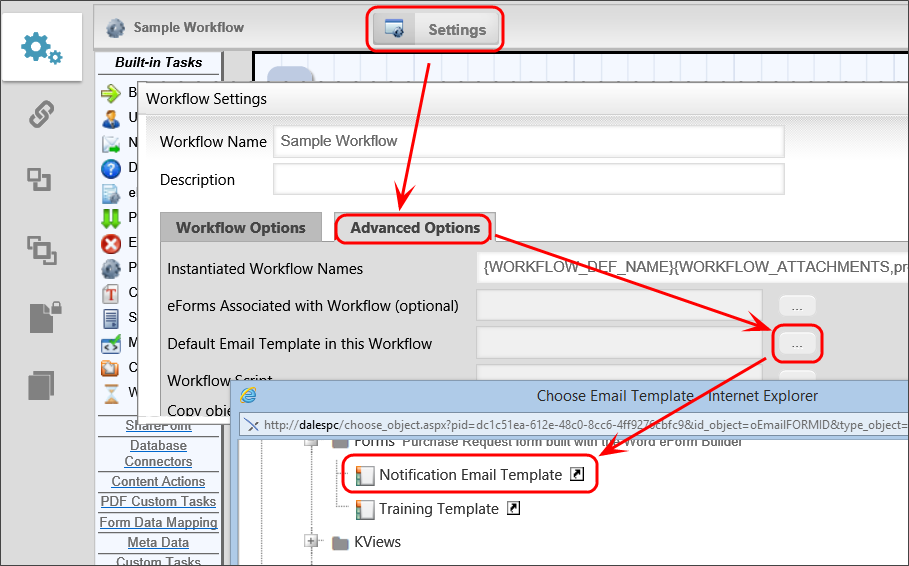
If checked, this option will copy objects in this Workflow package to the package’s parent. You can optionally limit the objects copied by group. The parent process may be either a Workflow or a Process Timeline.
If checked, this option will copy objects from this Workflow’s parent process to this Workflow. You can optionally limit the objects copied by group. The parent process may be either a Workflow or a Process Timeline.
A Workflow is made up of a series of steps. Each step in a Workflow identifies the task to be performed and the users that should perform the task. Steps are run from the beginning (start step) and follow the branches (route). Steps can be easily added, moved and deleted from a Workflow definition and the route or path is defined using branches between steps.
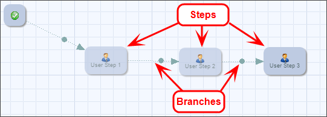
The Workflow builder has a toolbar displayed on the left side of the screen. This contains all of the Workflow tasks available to you. Each task type identifies the type of Workflow function to be performed for this step and provides the participating users with different capabilities. Tasks are grouped in the toolbars (e.g. Built-In Tasks). To view tasks in the different groups click on the group name (e.g. Other Tasks). To use a task, click on the icon, drag it to the right and drop it on the Workflow palette.
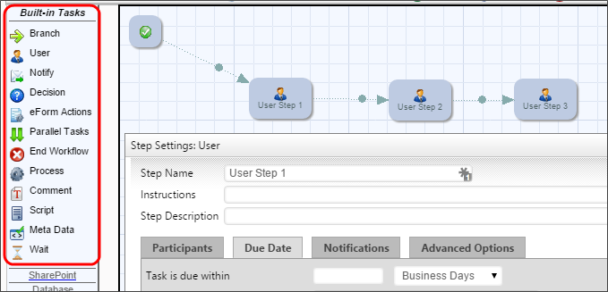
The built-in Workflow tasks are in the Built-in Tasks groups in the toolbar. If any custom tasks are installed, they will appear as new groups in the toolbar. The group names are the folder names where the custom task is installed in the Content List.
To define the route that the Workflow will take, you must connect the steps. This is done by using the Branch in the Built-in Tasks group. To branch two steps together, click on the Branch in the toolbar. Then click on a step in the Workflow and drag it to the step you want to branch to, lifting the mouse over that step. This will draw a line between the two steps showing the direction of the flow.
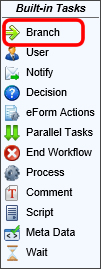
To delete the line (branch), right click on the handle in the line (displayed as a circle in the middle of the line), then select "Delete" from the pop-up menu.
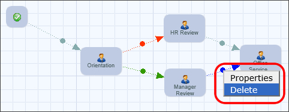
When using the Branch task you can branch from a step to multiple steps which allow you more flexibility with your process. Each branch that is created has branch settings. Right click on the handle in the line and select Properties.
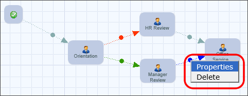
Branches in a Workflow can have the following information associated with them.
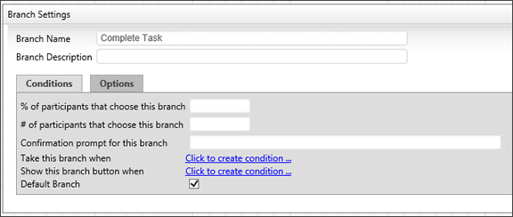
The first field on this dialog identifies the name of the branch. This information is important for the users because it is used to display a button on the Form with the branch name as the label. This will determine the route the user will take in the Workflow process. The button will only display during the step the branch is connected from. For example: The image below displays the branch name as Reject which will display a button, labeled “Reject”, on the Form in the Form Approval step.
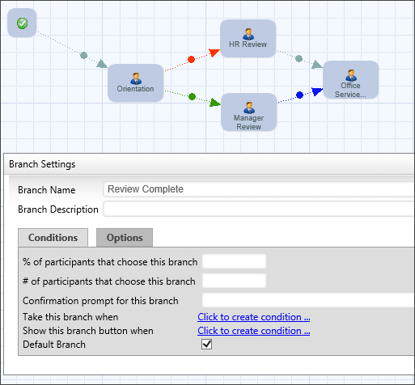
You can leave this field blank to display the default button “Complete Task”.
This field contains an optional description of this task. This can be used by the builder of the Workflow to document what this branch is used for and why it is here. The end-users won't see this field.
A branch in the Workflow can have conditions assigned to it. This provides the flexibility to conditionally route a Workflow based on information from the Workflow process (Form, references, user, etc.).
You can specify the percentage of participants you want to have clicking on this button before continuing on in the process.
You can specify the number of participants you want to have clicking on this button before continuing on in the process.
You can build a condition to be met in order for the Workflow process to continue on this branch. Refer to the Condition Builder topic of this guide.
You can specify the default branch to take if no condition or multiple conditions are met.
Each branch has its own options. You can configure them by clicking on the Options tab.
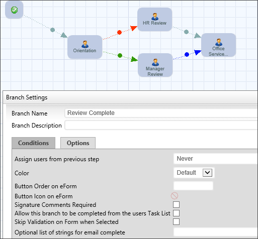
This will give you the following options to assign users from the previous step:
The “Color” option sets the color of the branch graphic displayed in the Workflow. The “Button Order on Form” option tells the Form in what order to draw the buttons, from left to right. The “Button Icon on Form” option changes the icon displayed on the Form button.
Specify the button order by number that controls the order of the buttons displayed on the form. A button order of -1 will prevent the button from being displayed on the form. This can be used when a condition is associated with the branch (e.g. based on the value of a form field) but you don't want the button to be displayed to the user on the form.
You can insert an icon on your button which will display before the button label.
Check this box to require the user to enter comments upon completion of task.
Check this box to allow users to complete the task from their Task List screen, without having to open the Form associated with the Workflow. When the user completes a task from the Task List, Process Director will display a small popup that indicates the task completion is in progress. Additionally, if the branch selected is configured to require completion comments, Process Director will prompt the user for the comments before completing that task.
The size of the prompt and confirmation dialogs won't usually need to be changed, however, if, for some reason the size does need to be changed, there are custom variables available to change the width and height of the dialogs: nTaskCompleteDialogWidth, nTaskCompleteDialogHeight, nTaskCompletePromptDialogWidth, and nTaskCompletePromptDialogHeight. Documentation for these four custom variables can be found in the Miscellaneous Custom Variables topic of the Developer's Guide.
Check this box to specify that a given branch will cause validation to be skipped. The feature is especially useful for steps/activities that include an option for the user to abandon or reject a form, which the user should be able to accomplish without, for example, filling in all required fields.
If this branch can be completed by email, users can complete it by replying to the task assignment email with a specific string. This text box is used to set the list of response strings the user can enter into the reply email. For example, if this is a rejection branch, you might enter the list of allowable responses as "Reject, Disapprove, Disapproved, No, Rejection". If the user enters any of these words into the reply email, the task will be rejected.
These settings are included in all task types. To configure a step in the Workflow, right click on the step and choose the Properties menu item, or double click on the icon. All steps in a Workflow definition will have the following information associated with them.
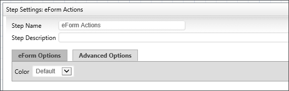
The first field on this dialog identifies the name of the step. This information is important for the users and the Workflow owners because it is used to determine what step the Workflow is currently running on, and what function is being performed. This is also displayed on the Routing Slip to show where the process is currently running.
This field contains an optional description of this task. This can be used by the Workflow builder to document what this step is used for and why it is here. The end-users won't see this field.
This contains instructions for the users telling them how to perform the task assigned to them. This information will be contained in the email sent to the users, it will be displayed on their Task List, and it is displayed in the Process Timeline Package.
This field contains an optional color of this step. This can be used by the Workflow builder to document help visualize the Workflow process.